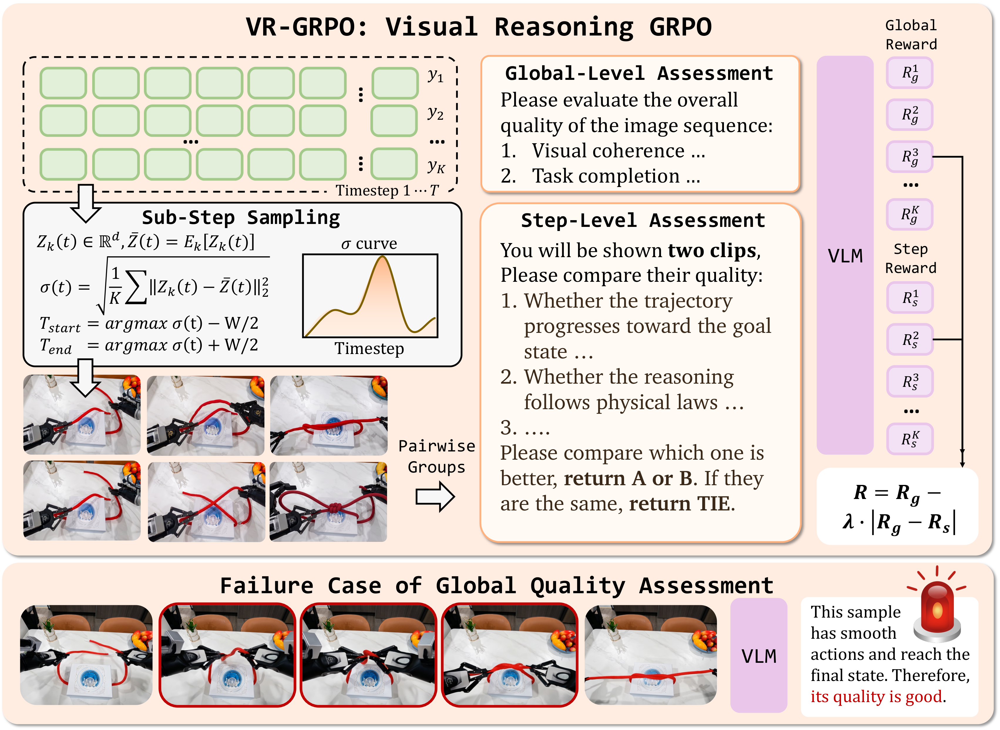

核心判断
把 UniVR 称为“视觉空间中的 chain-of-thought”容易过度理解。它并没有展示一个可反省、可搜索、可验证任意命题的通用视觉推理机；模型学习的是从初始图像和文本任务指令到一串关键视觉状态的条件生成。对系绳、叠衣、导航、拼图这类问题，这串状态同时承担计划、预测和答案的角色，所以它确实比“先写文字步骤、再逐帧渲染”更贴近任务本体。
总体绝对分
VR-X 上从 Emu3.5 的 39.8 提升到 58.2；这不是 18.4% 相对增幅，而是 18.4 个评分点。
训练资源
论文报告 SFT/RL 使用 32 张 GPU，Qwen3-VL-30B 奖励模型另占 8 张；34B 长视觉序列训练并不轻量。
公开数据行数
公开数据仓当前可见总行数，低于论文所述 310k SFT + 3k RL + 1.8k eval；“全部开放”仍需按发布物核对。
Step-Focal reward 把奖励预算投向同一任务多个 rollout 最分歧的时间段。这是一种“主动寻找决策分叉”的信用分配方法，比只看终态更适合长程生成。
它真正要解决什么
传统多模态流水线常把语言当中间总线：VLM 先产出文字计划，图像模型再把每一步渲染成画面。问题在于，绳结拓扑、衣物形变、液体倾倒、遮挡关系和手—物接触状态很难被短文字无损表达；逐帧图像编辑还会不断累积身份漂移与物理错误。
另一条路线是视频或世界模型，但许多系统只覆盖单一环境、短时间预测，或依赖稠密文字说明。UniVR 的问题重构是：能否把异构任务都写成“给定初始视觉状态与目标，直接生成关键状态轨迹”，再让同一模型从纯视觉示范轨迹中学习状态转移与策略？
答案轨迹不需要逐步文本 CoT，输出中也没有中间文字链；但输入仍包含文本 instruction，310k 数据的问答与关键帧由 Qwen3.5-397B 辅助生成，RL 奖励使用 Qwen3-VL-30B，最终 VLM 指标使用 Qwen3.5-397B。因此它消除的是密集语言中介，不是端到端系统里的全部语言监督。
机制：把计划压进可生成的视觉状态

形式上，给定已有视觉序列 (x_{1:t}) 与 instruction，模型学习：
这里的“思考”并不是模型内部隐藏态被直接监督，而是外显的中间视觉状态。每一帧既是下一步的上下文，也是可被人或奖励模型检查的中间承诺。其优势是状态变化可视化；代价是每张 512px 短边图像约需 1,000–1,500 个 token，一条轨迹可到 15k–20k token，推理与训练成本远高于短文本动作序列。
两阶段训练
第一阶段从 1.5M 候选中筛出约 310k 样本，统一成“query image、instruction、visual trajectory”。视频以约 0.27 FPS 做场景感知采样，再经历去重、低质帧过滤、问题与关键步骤生成，论文称约 80% 候选会被丢弃。第二阶段从 SFT 数据中挑选约 3k hard samples，进行 250 步全参数 RL。
VR-GRPO：不只问“最后做成了吗”

对同一任务采样 (K) 条轨迹。长度对齐后，在每个时间段用 CLIP 图像特征计算 rollout 间方差：
直觉是：轨迹最分歧的位置往往对应策略分叉、不确定操作或开始崩坏的地方。模型截取 (t^*) 周围宽度 (W=4) 的窗口，让 Qwen3-VL-30B 对候选轨迹做 pairwise 比较，得到步骤奖励 (R_s)；完整轨迹比较产生全局奖励 (R_g)。二者组合为：
这个式子不是简单平均：局部与全局不一致会被扣分。例如终态看起来成功、但中途绳子穿模，(R_g) 高而 (R_s) 低，最终奖励可显著下降，甚至变成负数。它迫使 policy 同时满足“结果像成功”和“过程没有明显断裂”。
高 CLIP 方差只是有信息量的审计点：它可能是错误分叉，也可能是多个都正确的策略、镜头变化或外观多样性。方法的有效性仍依赖 VLM 比较器能在该窗口判断物理与逻辑优劣。
最有说服力的证据

| 比较 | Long-term planning | General reasoning | JEPA ↓ | 应如何解释 |
|---|---|---|---|---|
| Emu3.5 | 38.6 / 42.8 / 32.7 | 35.3 / 43.4 / 46.2 | 33.62 | 同一 34B 基座的起点 |
| UniVR | 59.5 / 68.0 / 48.5 | 46.5 / 62.2 / 64.3 | 13.01 | 六类任务均提升，整体 39.8 → 58.2 |
| Gemini 3 Pro + Nano Banana 2 | 66.2 / 67.1 / 63.7 | 55.1 / 65.5 / 79.0 | 11.07 | 总体 66.1，仍高于 UniVR；机器人项 UniVR 略高 |
- 奖励消融：cold-start 的 LP/GR/JEPA 为 48.2/42.4/18.44；只加全局奖励变成 45.7/46.0/22.30，长程规划和物理分布指标反而恶化；只加步骤奖励为 54.9/45.8/15.87；全局+步骤为 61.6/53.7/12.89；再用 pairwise 变成 63.8/55.4/13.01。这是 Step-Focal 必要性最直接的证据。
- 时间跨度：相对 Emu3.5，UniVR 在 >60 秒组从 21.7 提升到 45.6（+23.9 点），高于短于 10 秒组的 +16.9 点，与“中间纠错对长程更重要”的机制一致。
- 外部任务：WorldArena、Uni-MMMU、RBench 分别由 40.3/28.7/31.2 提升到 49.5/54.4/47.7，说明增益不只出现在 VR-X；但这些测试仍使用相同 VLM 评分协议，不等于独立人工成功率。
- 理解任务：加入 interleaved image-text 序列的 UniVR checkpoint 在 MMMU、MME、MMBench、MathVista、MM-Vet 全部提升；不过这组模型与纯视觉主结果的训练配方并不完全相同。
机器人操作是 42.8 → 68.0，即 +25.2 个绝对评分点；若算相对提升则约为 58.9%。全局 Overall 是 39.8 → 58.2，即 +18.4 点、约 +46.2% 相对提升。论文 headline 把绝对点数写成百分比，阅读时应区分。
论文怎么说，开放材料实际提供了什么
| 项目 | 论文 / 模型卡口径 | 公开材料核对 | 结论 |
|---|---|---|---|
| 训练代码 | Step-Focal 使用 CLIP rollout 方差定位窗口 | 当前奖励文件的 sampled-frame 路径默认随机抽取 50% 与 GT 对齐帧；未发现论文所述 CLIP 方差定位实现 | 框架已开放，精确论文 recipe 尚不完整 |
| rollout 数 | 论文 (K=8) | 默认 YAML 为 8，但 full-training shell 覆盖成 6 | 运行脚本与论文配置不一致 |
| SFT 方式与学习率 | 34B 全参数；表中 cold-start LR 为 (5\times10^{-4}) | 名为 full 的脚本仍传入 --use_lora True，LR 为 (10^{-5}) | 不能直接用发布脚本复现主实验 |
| 数据规模 | 310k SFT + 3k RL + 1.8k eval | 公开数据仓 API 当前统计 238,006 行、约 68.4 GB；README 还保留旧下载组织名 | 数据已大规模开放，但不是论文宣称规模的完整可核验镜像 |
| 模型 | 34B Planning 与 General | 两个 checkpoint 均有 14 个 safetensors shard，模型卡已公开 | 权重开放较完整，但本轮未做 34B 推理复现 |
这些差异不证明论文结果错误，但会改变“可复现”的强度：目前最容易复现的是模型加载、SFT/RL 框架和已有权重推理；最难复现的是与论文完全一致的数据组成、Step-Focal selector、训练超参数与主表评测链。
术语与指标
关键限制：它还没有证明什么
- 不是完全去语言化。文本目标、Qwen 数据策展、Qwen 奖励和 Qwen 评测都构成语言先验；更准确的贡献是减少逐步语言轨迹监督。
- 评测与训练存在 evaluator family coupling。RL 用 Qwen3-VL-30B，主指标用更大的 Qwen3.5-397B，二者共享模型家族与相似判断范式；同一偏好可能同时塑造 policy 和判定结果。
- VR-X 不是纯独立 benchmark。同一素材池被处理成 SFT、RL 和 held-out evaluation，论文称 eval 来自 held-out subset，但没有给出视频级、场景级或来源级去重证明；近邻泄漏风险无法量化。
- 缺少统计不确定性。主表和消融没有多 seed、置信区间或显著性检验；1.8k 总样本分成六类后，几个点的差异是否稳定并不清楚。
- JEPA 是代理指标。V-JEPA 表征包含运动知识，但 MMD 接近真实分布不能识别任务特定的拓扑错误、因果错误或危险动作。
- 比较系统并非严格 compute-matched。闭源 VLM+图像编辑器与 34B 自回归视觉模型的成本、采样策略、上下文、每步渲染次数不同，主表更像产品路线比较，不是同预算算法赛跑。
- 视觉轨迹不是可执行控制。生成“下一步应该长什么样”与输出机器人低层动作之间仍隔着逆动力学、闭环观测、碰撞约束和安全控制器。
若独立团队在严格视频级去重、人工任务成功率、多个随机种子和 compute-matched baseline 下无法复现长程增益，UniVR 的主结论会从“视觉轨迹学习有效”降级为“学会迎合特定视觉评估器”。反之，若 Step-Focal 在闭环机器人执行中仍减少中途失败，它会成为很有普适性的长程信用分配方法。
独立 Insight：视觉 CoT 的真正价值是“可审计状态承诺”
文本 CoT 的每一步通常是命题；UniVR 的每一步则是对世界状态的承诺。这带来一个更通用的系统设计：不要只让 agent 输出动作，也让它周期性预测“执行后世界应该是什么样”。真实观测与预测状态的差异，就能成为 replanning、异常检测和训练奖励。
分歧驱动的 verifier allocation
Step-Focal 可以推广到代码、GUI agent 和机器人：对多个候选轨迹找状态分歧峰值，把昂贵 verifier 预算集中到最可能改变最终决策的位置。
视觉轨迹是 action abstraction
关键帧处于文字计划和低层控制之间：比文字保留更多几何信息，比逐像素视频更稀疏。它可能成为跨本体共享的高层 action representation。
最危险的是共同盲点
若所有 rollout 在同一位置犯同一种错，方差反而很低，Step-Focal 不会聚焦那里。系统仍需要规则、动力学模型或独立传感器捕获低分歧的系统性错误。
下一步应从生成走向闭环
真正的研究跃迁不是更漂亮的轨迹图，而是“预测状态 → 执行动作 → 读取真实状态 → 比较偏差 → 重规划”的闭环成功率、恢复率和安全率。
一句工程建议：如果要复用 UniVR 思路，先复用“在轨迹分叉处加密验证”而不是直接训练 34B 图像 token 模型。前者可插入现有 agent 系统，成本更低，也更容易用真实失败日志检验。
证据边界与资料索引
本文完整核对 arXiv v1 正文、图表与附录，并检查项目页、2026-07-16 的公开代码提交、模型卡、模型文件清单、数据卡和数据服务统计。数值复算包括绝对/相对增益、公开数据行数与全配对数量。本轮没有下载约 34B 权重做推理，也没有用 32+8 GPU 复训；论文主结果因此属于发布方报告，代码/配置/发布物差异属于已核验事实，机制外推与工程建议属于分析推断。